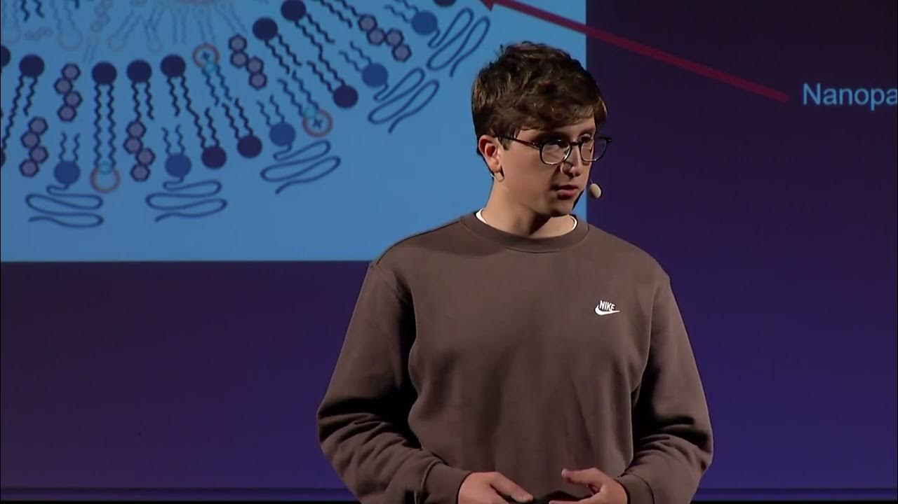

TEDxUTTroyes 2025
toutes les éditions
à propos
partenaires
SPEAKERS
édition 2024
speakers 2024
Les speakers du TEDxUTTroyes 2024
Claire Petreault
Lise Molimard
Yogan le Fouler-Barthel
Lydie Lescarmontier
Emmanuel Carquin

Damien Berry
Lilie Boizumault
le monde de demain
Tous les talks de l'édition 2024
Présentation
Speakers
Présentation
Speakers
Présentation
Speakers
TEDxUTTroyes 2025
Toutes les éditions
À propos
Partenaires
Tous les speakers
Toutes les éditions
Conférences TED
Billetterie
Formulaire